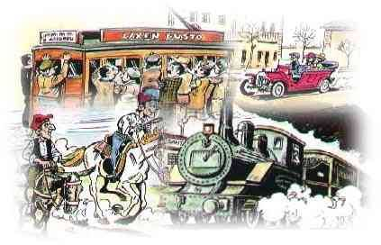

| 
|
| |
|
Sant Andreu de Palomar és, de fet ho ha sigut sempre,
un lloc bén comunicat. Per STAP s'havia de passar per a conectar amb
Roma i per STAP es passa avui en dia per a conectar amb Europa (via
terrestre,és clar).
Per altra banda, les comunicacions amb Barcelona segueixen éssent bones
(mai no han estat dolentes, fet i fet). Això ha comportat i comporta
sacrificis per a STAP: ja en va comportar el 'Tramvia de Foc' i en comporten
avui la Meridiana, el Nus de La Trinitat i Les Rondes (la de d'Alt i
la del Mig en el que era l'antic Terme Municipal). Aviat el pas i l'Estació
Central de T.G.V....
Malgrat tot, estem bén comunicats:
- Metro:
Sis estacions a l'avui Districte: 'Fabra i Puig', 'Sant Andreu', 'Torras
i Bages', 'Sagrera', 'Navas', 'Congrés'. I cinc més a l'antic Terme
Municipal: 'Maragall', 'Virrei Amat', 'Vilapicina', 'Llucmajor' i Roquetes'.
- Ferrocarril:
Dues Estacions: 'Sant Andeu Comtal' i 'Sant Andreu Arenal'.
- Autobusos:
Una Estació d'Autobusos Interurbans.
Vàries (no masses, però) línies d'autobusos urbans.
- Taxis, cabines telefòniques, centrals de Correus, publicacions locals,
una televisió local... ara, Internet (dos Proveïdors, dues Web...)
Bones comunicacions. Bén comunicats sens dubte.
En aquest precís moment de manera un pel caòtica. Les obres de 'millora'(?)
de carrer Gran, al Districte Sant Andreu i les de la plaça Llucmajor
o el passeig Valldaura, al Districte Nou Barris, fan que tinguem
un bon trasbals.
En bona part és per això que aquesta pàgina està una mica encallada.
El que hi ha és el que hi havia abans de les ditxoses obres. Quan sapiguem
a què atendrens, la posarem al dia.
|
| |

|
| |
AUTOBUSOS URBANS
11
12
18
34
40
48
62
71
73
76
97
173
|
AUTOBUSOS METROPOLITANS
35
42
TM
A3
B20
B22
B28
V2
|
AUTOBUSOS NOCTURNS
N3
N9
|
| |
|
RENFE
RODALIES
Sant Andreu Comtal
Sant Andreu Arena
|
| |
|
AUTOBUSOS URBANS
|
| |
|
11
Roquetes / Baró de Viver
Roquetes 04:30 h - 22:55 h
Roquetes - Artesania - Via Favència - Almansa - Via Júlia - Parc Guineueta
- Pl. Llucmajor - Pg. Verdum - Dr. Pi i Molist - Pl. Virrei Amat - Escòcia
- Parc Pegaso - Virgili - Sant Adrià -Arbeca - Lima - Caracas - Baró
de Viver.
Baró de Viver 04:30 h - 23:30 h
Baró de Viver - Caracas - Lima - Arbeca - Sant Adrià - Gran de Sant
Andreu - Pg. Fabra i Puig (La Rambla STAP) - Pl. Virrei Amat - Dr. Pi
i Molist - Pg. Verdum - Pl. Llucmajor - Parc Guineueta - Artesania -
Gòngora - Almansa - Via Favència - Mina de la Ciutat - Roquetes.
|
| |
|
12
Prosperitat / Sant Andreu
Prosperitat 04:30 h - 23:10 h
Prosperitat - Pg. Valldàura - Pl. Llucmajor - Parc Guineueta - Pg. Verdum
- Dr. Pi i Molist - Pl. Virrei Amat - Escòcia - Dublín - Rovira i Virgili
- Parc Pegaso - Virgili - Sant Andreu.
Sant Andreu 04:50 h - 23:30 h
Sant Andreu - Sant Adrià - Gran de Sant Andreu - Pg. Fabra i Puig (La
Rambla STAP) - Pl. Virrei Amat - Dr. Pi i Molist - Pg. Verdum - Pl.
Llucmajor - Parc Guineueta - Pg. Valldàura - Boada - Argullós - Prosperitat.
|
| |
|
18
Plaça Congrés / Drassanes
Plaça Congrés 07:15 h - 21:30 h
Plaça Congrés - Felipe II - Espronceda - Av. Meridiana - Mallorca -
Sagrada Família - Sardenya - Gran Via - Pl. Tetuan - Bruc - Ausiàs Marc
- Pl. Urquinaona - Pl. Catalunya - La Rambla (BCN) - Drassanes.
Drassanes 07:52 h - 22:00 h
Drassanes - La Rambla (BCN) - Pl. Catalunya - Gran Via - Pl. Tetuán
- Marina - València - Av. Meridiana - Bofarull - Felipe II - Concepción
Arenal - Cardenal Tedeschini - Plaça Congrés.
|
| |
|
34
Sarrià / Plaça Virrei Amat
Sarrià 06:00 h - 22:50 h
Sarrià - Bonaplata - Fontcoberta - Capità Arenas - Pl. Maria Cristina
- Av. Diagonal - Pl. Francesc Macià - Pl. Juan Carlos I - València -
Clot - Berenguer de Palou - Virgili - Onze de Setembre (La Rambla STAP)
- Pg. Fabra i Puig (La Rambla STAP) - Pl. Virrei Amat.
Plaça Virrei Amat 05:20 h - 22.00 h
Pl. Virrei Amat - Escòcia - Parc Pegaso - Sagrera - Clot - Mallorca
- Sagrada Família - Pl. Verdaguer - Av. Diagonal - Pl. Juan Carlos I
- Pl. Francesc Macià - Av. Sarrià - RCD Espanyol - Pg. St. Joan Bosco
- Major de Sarrià - Padró de la Creu - Sarrià.
|
| |
|
40
Trinitat Vella / Pla del Palau
Trinitat Vella 04:30 h - 22:25 h
Trinitat Vella - Pg. Torras i Bages - Plaça Orfila - Gran de Sant Andreu
- Sagrera - Pont del Treball - Cantàbria - Gran Via - Bac de Roda -
Pere IV - Almogàvers - Parc Estació Nord - Arc de Triomf - Rda. Sant
Pere - Pl. Urquinaona - Via Laietana - Catedral - Correus - Port Vell
- Pla del Palau.
Pla del Palau 04:30 h - 23:05 h
Pla del Palau - Correus - Catedral - Via Laietana - Trafalgar - Arc
de Triomf - Pg. Pujades - Parc Ciutadella - Pallars - Pere IV - Espronceda
- Gran Via - Cantàbria - Pont del Treball - Berenguer de Palou - Virgili
- Plaça Orfila - Pg. Torras i Bages - Trinitat Vella.
|
| |
|
48
Plaça Catalunya / Espronceda
Plaça Catalunya 06:25 h - 22:55 h
Pl. Catalunya - Pl. Tetuán - Pg. St. Joan - València - Navas de Tolosa
- Concili de Trento - Espronceda.
Espronceda 06:00 h -- 23:30 h
Espronceda - Felipe II - Clot - Mallorca - Pl. Verdaguer - Pg. St. Joan
- Pl. Tetuan - Gran Via - Pl. Catalunya.
|
| |
|
62
Plaça Tetuán / Ciutat Meridiana
Plaça Tetuán 04:30 h - 23.00 h
Pl. Tetuán - Gran Via - Padilla - Consell de Cent - Av. Meridiana -
Parc Can Dragó - Bartrina - Pg. Torras i Bages - Carretera de Ribes
- Trinitat Vella - N-152 - Ciutat Meridiana.
Ciutat Meridiana 05:00 h - 23:30 h
Ciutat Meridiana - N-152 - Trinitat Vella - Av. Meridiana - Parc Can
Dragó - Aragó - Nàpols - Diputació - Bailèn - Pl. Tetuán.
|
| |
|
71 (No funciona diumenges
i festius)
Turó de la Pèira / Poble Nou
Turó de la Pèira 05:00 h - 22:30 h
Turó de la Pèira - Pg. Fabra i Puig - Pl. Virrei Amat - Felipe II -
Plaça Congrés - Espronceda Bac de Roda - Pl. Josep Trueta - Pujades
- Pamplona - Vila Olímpica - Poble Nou.
Poble Nou 05:15 h - 22:45 h
Poble Nou - Vila Olímpica - Àlaba - Llull - Pl. Josep Trueta - Bac de
Roda - Pont de Calatrava - Felipe II - Plaça Congrés - Pl. Virrei Amat
- Pg. Fabra i Puig - Turó de la Pèira.
|
| |
|
73
Avinguda Tibidabo / Baró de Viver
Avinguda Tibidabo 06:30 h - 22:30 h
Av. Tibidabo - Pl. J.F.Kennedy - Tramvia Blau - Pg. St. Gervasi - Av.
Rep. Argentina - Pg. Vall d'Hebron - Ciutat Sanitària - Velòdrom - Pl.
Karl Marx - Pg. Valldàura - Parc Guineueta - Pl. Llucmajor - Bartrina
- Pg. Torras i Bages - Sant Adrià - Arbeca - Lima - Caracas - Baró de
Viver.
Baró de Viver 05:45 h - 21:50 h
Baró de Viver - Caracas - Lima - Arbeca - Sant Adrià - Segre - Plaça
Orfila - Pg. Torras i Bages - Agustí Milà - Pg. Valldàura - Parc Guineueta
- Pl. Llucmajor - Pl. Karl Marx - Pg. Vall d'Hebron - Velòdrom - Ciutat
Sanitària - Pg. St. Gervasi - Tramvia Blau - Pl. J.F.Kennedy - Av. Tibidabo.
|
| |
|
76
Passeig Vall d'Hebrón / Ciutat Meridiana
Pg. Vall d'Hebrn 05:30 h - 23:30 h
Pg. Vall d'Hebrón - Av. Jordà - Pg. Vall d'Hebron - Ciutat Sanitària
- Velòdrom - Pl. Karl Marx - Pg. Valldàura - Parc Guineueta - Pl. Llucmajor
- Via Júlia - Via Favència - Carretera de Ribes - N-152 - Torre Baró
- Ciutat Meridiana.
Ciutat Medridiana 05:00 h - 22:45 h
Ciutat Meridiana - Torre Baró - N-152 - Tamariu - Aigublava - Via Júlia
- Pl. Llucmajor - Parc Guineueta - Pg. Valldàura - Pl. Karl Marx - Pg.
Vall d'Hebrón - Velòdrom - Ciutat Sanitària - Av. Jordà - Pg. Vall d'Hebrón.
|
| |
|
97
Vallbona / Passeig Fabra i Puig
Vallbona 05:15 h - 21:45 h
Vallbona - Oristà - Av. Alzinar - Av. Sivatte - Torre Baró - N-152 -
Av. Meridiana - Parc Can Dragó - Passeig Fabra i Puig.
Passeig Fabra i Puig 05:00 h - 21:30 h
Passeig Fabra i Puig - Av. Meridiana - Parc Can Dragó - N-152 - Av.
Alzinar - Oristà - Vallbona.
|
| |
|
173 (Només funciona els
dies lectius del curs escolar)
Torras i Bages / Pg. Vall d'Hebrón
Passeig Torras i Bages 07:15 h - 20:55 h
Pg. Torras i Bages - Joan Torras - Agustí Milà - Pg. Valldàura - Pl.
Llucmajor - Pg. Valldàura - Pl. Karl Marx - Pg. Vall d'Hebrón - Velòdrom
- Ciutat Sanitària - Pl. Vall d'Hebrón.
Plaça Vall d'Hebrón 07:40 h - 20:38 h
Pl. Vall d'Hebrón - Ciutat Sanitària - Velòdrom - Pg. Vall d'Hebrón
- Pl. Karl Marx - Pg. Valldàura - Pl. Llucmajor - Pg. Valldàura - Bartrina
- Palomar - Passeig Torras i Bages.
|
| |
|
AUTOBUSOS METROPOLITANS
|
| |
|
35
Hospital de Sant Pau / Santa Coloma de Gramenet
Hospital de Sant Pau 05:15 h - 22:45 h
Hospital St. Pau - Dos de Maig - Hospital Creu Roja - València - Clot
- Sagrera - Berenguer de Palou - Virgili - Plaça Orfila - Passeig Torras
i Bages - Passeig Santa Coloma - SANTA COLOMA - Pg. Llorenç Serra -
Av. Santa Coloma - Av. Banús Baixa - Bruc - Santa Coloma.
Santa Coloma 04:30 h - 22:00 h
Santa Coloma - Bruc - Mn. C. Verdaguer - Av. Generalitat - Pl. de la
Vila - Pg. Llorenç Serra - BARCELONA - Passeig Santa Coloma - Passeig
Torras i Bages - Sant Adrià - Gran de Sant Andreu - Sagrera - Clot -
Mallorca - Independència - Dos de Maig - Hospital Creu Roja - Hospital
St. Pau.
|
 |
|
42
Santa Coloma de Gramenet / Plaça Catalunya (BCN)
Santa Coloma 04:30 h - 22:25 h
Mn. C.Verdaguer - Av. Generalitat - Pl. de la Vila - Pg. Llorenç Serra
- BARCELONA - Passeig Santa Coloma - Caracas - Bon Pastor - Gran Via
- Bac de Roda - Pere IV - Almogàvers - Parc Estació Nord - Arc de Triomf
- Rda. St. Pere - Pl. Urquinaona - Pl. Catalunya.
Plaça Catalunya 04:30 h - 23:05 h
Pl. Catalunya - Pl. Urquinaona - Arc de Triomf - Pg. Lluís Companys
- Pg. Pujades - Parc Ciutadella - Pallars - Pere IV - Espronceda - Gran
Via - Bon Pastor - Caracas - Pg. Sta. Coloma - SANTA COLOMA - Pg. Llorenç
Serra - Av. Sta. Coloma - Av. Banús Baixa.
|
| |
|
TM
Sagrera / Mas Rampinyo (Montcada i Reixac)
Sagrera 04:35 h - 22:45 h
Sagrera - Av. Meridiana - Bartrina - Plaça Mossen Clapés - Palomar -
Passeig Santa Coloma - Av. Meridiana - N-152 - MONTCADA I REIXAC - N-152
- Pl. St. Joan - Bateria - Av. Ribera - Carbonell - Av. Ribera - Mn.
Joaquim - Castellví - Rambla Països Catalans - Pl. Espanya - Av. Anselm
Clavé - Av. Catalunya - Mas Rampinyo.
Mas Rampinyo 05:05 h - 22:25
Mas Rampinyo - Av. Catalunya - Anselm Clavé - Pl. Espanya - Rambla Països
Catalans - Av. Ribera - Pg. Jaume I - Av. Ribera - Pl. St. Joan - BARCELONA
- N-152 - Av. Meridiana - Sagrera.
|
| |
|
A3 (SARBUS)
Fabra i Puig / Serraparera (Cerdanyola)
Fabra i Puig 05:30 h - 23:00 h
Fabra i Puig - Av. Meridiana - N-152 - MONTCADA I REIXAC - N-150 - CERDANYOLA
- Av. Catalunya - Av. Primavera - Altimiras - Pg. Cordelles - Francolí
- St. Casimir - Av. Espanya - Av. Argentina - Serraparera.
Serraparera 05:00 h - 21:35 h
Serraparera - Av. Argentina - Av. Espanya - St. Casimir - Sta. Marcelina
- Altimiras - Av. Primavera - MONTCADA I REIXAC - N-150 - BARCELONA
- Av. Meridiana - Fabra i Puig.
|
| |
|
B20 (TUBSAL)
Ronda Sant Pere / Singuerlín (Santa Coloma de Gramenet)
Ronda Sant Pere 05:15 h - 23:50 h
Ronda St. Pere - Gran Via - Pl. Tetuan - Marina - València - Clot -
Sagrera - Berenguer de Palou - Virgili - Segre - Passeig Torras i Bages
- Passeig Santa Coloma - SANTA COLOMA - Pg. Salzareda - Francesc Macià
- Anselm Riu - Font de l'Alzina - Singuerlín.
Singuerlín 04:40 h - 23:15 h
Singuerlín - Ctra. Font de l'Alzina - Av. Anselm de Riu - Victor Hugo
- Av. Francesc Macià - Pg. Llorenç Serra - BARCELONA - Passeig Santa
Coloma - Passeig Torras i Bages - Sant Adrià - Gran de Sant Andreu -
Sagrera - Clot - Mallorca - Sardenya - Ausiàs Marc - Rda. St. Pere.
|
| |
|
B22 (TUBSAL) (De dilluns
a dissabtes)
Metro Sagrera / La Salut (Badalona)
Metro Sagrera 05:30 h - 22:15 h
Metro Sagrera - Av. Meridiana - Dublin - Sagrera - Ciutat d'Elx - Hondures
- Ciutat d'Elx - Pont del Treball - Santander - BADALONA - Pl. Salvador
Dalí - Av. Pius XII - Rambla Solidaritat - Rda. St. Antoni de Llefià
- Av. Marquès de St.Mori - Calderon de la Barca - La Salut.
La Salut 05:00 h - 21:45 h
La Salut - Pau Piferrer - Austràlia - Europa - Av. Pius XII - Pl. Salvador
Dalí - BARCELONA - Santander - Cantàbria - Pont del Treball - Ciutat
d'Elx - St. Antoni Maria Claret - Av. Meridiana - Dublín - Sagrera -
Ciutat d'Elx - Hondures - Metro Sagrera.
|
| |
|
B28 (TUBSAL) (Amb autobusos
adaptats per a disminuïts)
Sant Andreu Comtal / Francesc Layret (Badalona)
Sant Andreu Comtal 05:30 h - 22:50 h
Sant Andreu Comtal - Sant Adrià - Biosca - Sas - Caracas - Tiana - SANTA
COLOMA - Llorenç Serra - Rambla Sant Sebastià - Camí del Fondo de Badalona
- BADALONA - Monaco - Verdi - Liszt - Rambla Sant Joan - Miquel Servet
- Francesc Macià - Francesc Layret.
Francesc Layret 05:00 h - 22:20 h
Francesc Layret - Via Augusta - Anselm Clavé - Rambla Sant Joan - Liszt
- Mendelssohn - SANTA COLOMA - Sicília - Rambla Sant Sebastià - Pl.
de la Vila - Pg. Llorenç Serra - BARCELONA - Ferran Junoi - Ciutat d'Asunción
- Potosí - Caracas - Sas - Sant Adrià - Sant Andreu Comtal.
|
| |
|
V20 (FONT)
Sant Andreu Arenal / Ripollet Centre
Sant Andreu Arenal 05:15 h - 22:45 h
Sant Andreu Arenal - Av. Meridiana - MONTCADA I REIXAC - N-150 - RIPOLLET
- Ntra. Sra. del Pilar - Ctra. Estació - Balmes - St. Josep - Pizarro
- Rambla Sant Esteve - Rambla Sant Jordi - Centre.
Ripollet Centre 04:45 h - 22:00 h
Centre - Rambla Sant Jordi - Rambla Sant Esteve - Pizarro - St. Josep
- Balmes - Ntra. Sra. del Pilar - Ctra. Estació - MONTCADA I REIXAC
- N-150 - BARCELONA - Av. Meridiana - Sant Andreu Arenal.
|
| |
|
AUTOBUSOS NOCTURNS
|
| |
|
N3 (TUBSAL)
Avinguda de Xile / Plaça Lluís Companys (Montcada i Reixac)
Avinguda de Xile 23:00 h - 03:30 h
Av. Xile - Av. Madrid - Pl. Centre - Berlin - París - Muntaner - Pl.
Catalunya - Gran Via - Pl. Tetuan - Padilla - Consell de Cent - Av.
Meridiana/Fabra i Puig - Av. Meridiana - MONTCADA I REIXAC - Pl. Lluís
Companys.
Plaça Lluís Companys 22:45 h - 04:15 h
Pl. Lluís Companys - BARCELONA - Av. Meridiana - Av. Meridiana/Fabra
i Puig - Aragó - Lepant - Diputació - Pl. Catalunya - Muntaner - Còrsega
- Londres - Marquès Sentmenat - Vallespir - Pl. Centre - Av. Madrid
- Arizala - Trav. de les Corts - Av. Xile.
|
| |
|
N9 (TUBSAL)
Drassanes / Plaça del Rellotge (Santa Coloma de Gramenet)
Drassanes 23:16 h - 04:00 h
Drassanes - La Rambla (BCN) - Pl. Catalunya - Gran Via - Marina - València
- Clot - Sagrera - Berenguer de Palou - Virgili - Segre - Plaça Orfila
- Passeig Torras i Bages - Passeig Santa Coloma - SANTA COLOMA - Pg.
Llorenç Serra - Av. Santa Coloma - Av. del Banús - Bruc - Pl. del Rellotge.
Plaça del Rellotge 22:10 h - 03:30 h
Pl. del Rellotge - Bruc - Mn. Cinto Verdaguer - Av. Generalitat - Pl.
de la Vila - Pg. Llorenç Serra - BARCELONA - Passeig Santa Coloma -
Passeig Torras i Bages - Sant Adrià - Gran de Sant Andreu - Sagrera
- Mallorca - Sardenya - Ausiàs Marc - Pl. Urquinaona - Pl. Catalunya
- La Rambla (BCN) - Drassanes.
|
| |
|
RENFE
RODALIES
Sant Andreu Comtal
Sant Andreu Arenal
|
| |
|
Estació SANT ANDREU COMTAL
Sant Vicenç de Calders/Vilanova -- Maçanet/Massanes Tarragona/Tortosa
Girona/Portbou
|
| |
|
* Direcció Sant Vicenç de Calders
- El Clot - Aragó (Correspondència: Aeroport - L'Hospitalet - Tordera)
- Passeig de Gràcia
- Sants (Correspondències: Aeroport - L'Hospitalet - Mataró - Tordera)
- L'Hospitalet - Vic - Puigcerdà
St. Vicenç/Vilafranca - Manresa - Lleida)
- Bellvitge
- El Prat de Llobregat (Correspondència: Aeroport - Tordera)
- Viladecans
- Gavà
- Castelldefels
- Platja de Castelldefels
- Garraf
- Vallcarca
- Sitges
- Vilanova i La Geltrú
- Cubelles
- Cunit
- Segur de Calafell
- Calafell
- Sant Vicenç de Calders (Correspondència: Tarragona - Tortosa - Manresa
- Lleida)
|
| |
|
* Direcció Maçanet de La Selva/Massanes
- Montcada i Reixac
- La Llagosta
- Mollet/Sant Fost
- Montmeló
- Granollers Centre
- Cardedeu
- Llinars del Vallès
- Palautordera
- Sant Celoni
- Gualba
- Riells i Viabrea/Breda
- Hostalric
- Maçanet/Massanes (Correspondència: Girona - Portbou - Tordera - Aeroport
- L'Hospitalet)
|
| |
|
Estació SANT ANDREU ARENAL
Sant Vicenç/Vilafranca -- Manresa
Tarragona/Tortosa Lleida
L'Hospitalet de Llobregat -- Vic
Puigcerdà
|
| |
|
* Direcció Sant Vicenç/Vilafranca
- Arc de Triomf
- Plaça de Catalunya
- Sants (Correspondències: L'Hospitalet - Vic - St. Vicenç/Vilanova
- Maçanet/Massanes - Aeroport - L'Hospitalet
Mataró - Tordera)
- Sant Ildefons de Cornellà
- Cornellà
- Sant Joan Despí
- Sant Feliu de Llobregat
- Molins de Rei
- El Papiol
- Castellbisbal
- Martorell
- Gelida
- Sant Sadurní d´Anoia
- Lavern/Subirats
- La Granada
- Vilafranca del Penedès
- Els Monjos
- L'Arboç
- El Vendrell
- Sant Vicenç de Calders (Correspondència: Tarragona - Tortosa - Manresa
- Lleida)
|
| |
|
* Direcció Manresa
- Torre del Baró
- Montcada Bifurcació (Correspondència: L'Hospitalet - Vic)
- Montcada i Reixac Manresa
- Montcada i Reixac Sta. Maria
- Cerdanyola del Vallès
- Barberà del Vallès
- Sabadell Sud
- Sabadell Centre
- Sabadell Nord
- Castellarnau
- Torrebonica
- Terrassa
- St. Miquel G. Viladecavalls
- Viladecavalls
- Vacarisses-Torreblanca
- Vacarisses
- Castellbell i el Vilar - Monistrol de Montserrat
- St. Vicenç de Castellet
- Castellgalí
- Manresa (Lleida)
|